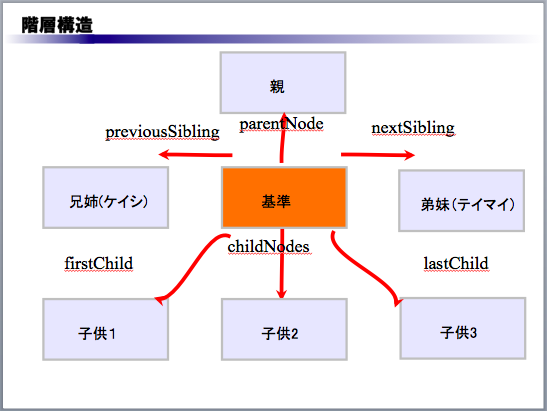

DOMとはHTML や XML で記述された各要素を取り扱うための標準インタフェースとして
1998年に W3C によって勧告されました。
JavaScriptはHTMLをドキュメントオブジェクトというオブジェクトとして扱います。
HTMLの構造を理解してみよう
解説１をみてください。
HTMLを１番上の階層として２番目の階層にHEADとBODYがいます。
更に３番目の階層にTITLEとDIVが存在したツリー構造になっていることが
わかります。
DOMはJavaScriptからHTMLを使う仕組み
要素を参照する方法
| 説明 | 記述例 |
|---|---|
| id 属性で指定した名前で要素を参照 | document.getElementById(id) |
| タグ名から要素リストを参照 | element.getElementsByTagName(tagName) |
要素で家族階層を参照する方法
※elementとはHTML や XML 文書における、要素（タグ）に相当し基本的な機能としNodeというインターフェースで処理を行います
| 説明 | 記述例 |
|---|---|
| 親要素を参照 | element.parentNode |
| 長子要素を参照 | element.firstChild |
| 末子要素 | element.lastChild |
| 兄姉要素を参照 | element.previousSibling |
| 弟妹要素を参照 | element.nextSibling |
| 子要素リストを参照 | element.childNodes |

注意点：兄姉要素や弟妹要素を取得する時は改行によってホワイトスペースノードが作られるためブラウザによって挙動が変わるので注意してください。